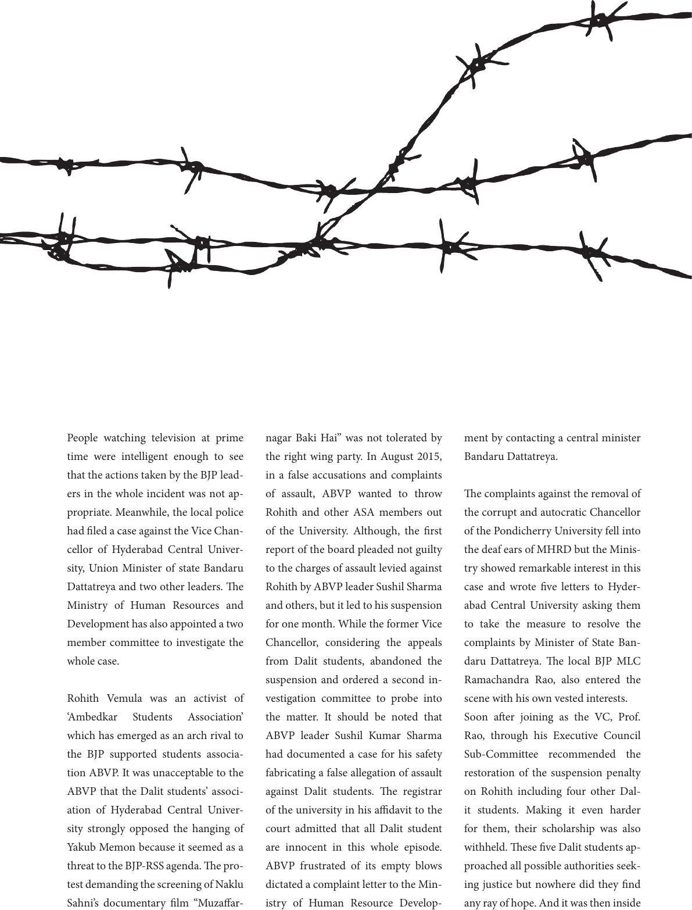

People watching television at prime
time were intelligent enough to see
that the actions taken by the BJP lead-
ers in the whole incident was not ap-
propriate. Meanwhile, the local police
had led a case against the Vice Chan-
cellor of Hyderabad Central Univer-
sity, Union Minister of state Bandaru
Dattatreya and two other leaders. e
Ministry of Human Resources and
Development has also appointed a two
member committee to investigate the
whole case.
Rohith Vemula was an activist of
‘Ambedkar Students Association’
which has emerged as an arch rival to
the BJP supported students associa-
tion ABVP. It was unacceptable to the
ABVP that the Dalit students’ associ-
ation of Hyderabad Central Univer-
sity strongly opposed the hanging of
Yakub Memon because it seemed as a
threat to the BJP-RSS agenda. e pro-
test demanding the screening of Naklu
Sahni’s documentary lm “Muzaar-
nagar Baki Hai” was not tolerated by
the right wing party. In August 2015,
in a false accusations and complaints
of assault, ABVP wanted to throw
Rohith and other ASA members out
of the University. Although, the rst
report of the board pleaded not guilty
to the charges of assault levied against
Rohith by ABVP leader Sushil Sharma
and others, but it led to his suspension
for one month. While the former Vice
Chancellor, considering the appeals
from Dalit students, abandoned the
suspension and ordered a second in-
vestigation committee to probe into
the matter. It should be noted that
ABVP leader Sushil Kumar Sharma
had documented a case for his safety
fabricating a false allegation of assault
against Dalit students. e registrar
of the university in his adavit to the
court admitted that all Dalit student
are innocent in this whole episode.
ABVP frustrated of its empty blows
dictated a complaint letter to the Min-
istry of Human Resource Develop-
ment by contacting a central minister
Bandaru Dattatreya.
e complaints against the removal of
the corrupt and autocratic Chancellor
of the Pondicherry University fell into
the deaf ears of MHRD but the Minis-
try showed remarkable interest in this
case and wrote ve letters to Hyder-
abad Central University asking them
to take the measure to resolve the
complaints by Minister of State Ban-
daru Dattatreya. e local BJP MLC
Ramachandra Rao, also entered the
scene with his own vested interests.
Soon aer joining as the VC, Prof.
Rao, through his Executive Council
Sub-Committee recommended the
restoration of the suspension penalty
on Rohith including four other Dal-
it students. Making it even harder
for them, their scholarship was also
withheld. ese ve Dalit students ap-
proached all possible authorities seek-
ing justice but nowhere did they nd
any ray of hope. And it was then inside